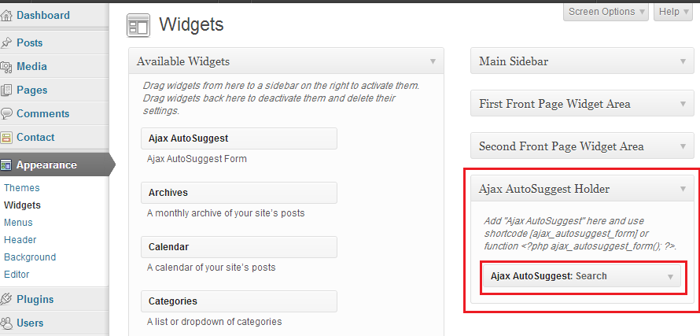
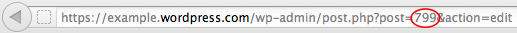

"Ajax AutoSuggest" adds instant search feature to your WordPress website.
It queries your website contents as you type and shows results as a dropdown list.
You can go to any result directly or open full search page.
This plugin can handle and categorize WordPress builtin and custom post type like Post, Pages, multiple Ecommerce products, FAQ, series,... and make your website content more available in a friendly manner.
Thank you for purchasing my plugin. If you have any questions that are beyond the scope of this help file, please feel free to contact. Thanks so much!
After installation, plugin is ready to use. You have multiple options to add search box to your website:
A shortcode is a WordPress-specific code that lets you do things with very little effort.
The usage is pretty simple; put [ajax_autosuggest_form] inside a post or page, the search form appears to users.
To make shortcode and PHP function work, you should go to WordPress admin > Appearance > Widgets page and add "Ajax AutoSuggest" widget to "Ajax AutoSuggest Holder" sidebar. 
Types of results:
Here is a list of installed post types of your WordPress, Select the ones you wish to appear in search results. If you install more post types the list grows.
Split results by post type:
If you want categorized search results enable it.
Search posts/products tags:Enabling this options expands search area into post_tags and products_tags.
Order by:
Controls the order of search results.
Max number of results:
Controls maximum number of search results.
Minimum characters:
Minimum characters needed to do search.
AJAX delay:
Specifies the delay (in Millisecond) of user typing to start AJAX request.
Cache length:
Sets the cache amount of search results.
Result description limit:
Limits the description length of each result item.
Result title limit:
Limits the title length of each result item.
Excluded IDs:
If you want to exclude some items from search results, enter their IDs here, seperate IDs with comma. eg: 2, 18, 300
To find the Page ID, go to Pages > All Pages and click the title of the page. The address bar of your browser will display a URL with a numeric ID at the end. This is the page ID.
To find other post types IDs (Pages, Products,...) do the same steps.

If you want to exclude some categories from search results, enter their IDs here, seperate IDs with comma. eg: 2, 18, 300
Full Search URL:Here a fully customizable URL, for "Full search" link at the end of results.
Display Thumbnail:
Controls displaying of thumbnail in search results.
Width:
The width of thumbnail in pixels.
Height:
The height of thumbnail in pixels.
Get first post image:
If post doesn't have a featured image (thumbnail), this option search inside post for an image.
Force resize first post image:
Uses Timthumb Library to resize first post image, if unchecked the image is sclaed by CSS and displayed.
Crop:
Controls crop of the featured image (thumbnail),.
Default image:
Specifies the default image to display in search result, default image is used when no featured image and post image found.
Display more bar:
Controls displaying of more search results link.
Display result title:
When search results are not categorized, a search title appear at top of results. This options Controls the displaying.
Search Image:
With this option, you can customize the search form magnifying icon for better theme integration.
Here you can customize search result color for better integration to your theme.
Here you can customize the titles of post types. If you install more WordPress post types the list grows.
How to resize old images to fit search result?
Use Regenerate Thumbnails to resize thumbnails. This plugin is also useful if want to change all thumbnails dimensions
How to use this plugin with UberMenu?